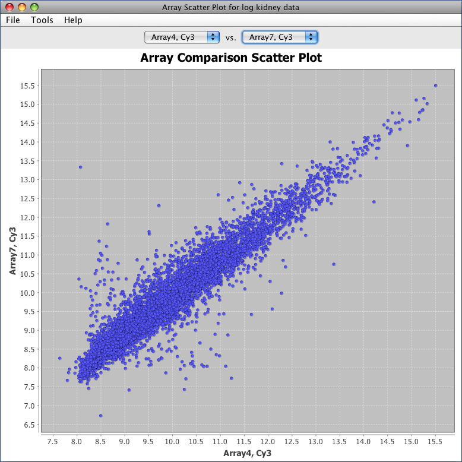

After loading tab data or affymetrix data you can do array vs. array intensity scatter plots (for two-dye experiments you can plot any array/dye combination against any other array/dye combination). You can open an array intensity scatter plot by right clicking an array node in your project's data tree and selecting Scatter Plot Array Intensities or by selecting Analysis→Plot Array Intensities→... from the main menu.

Array Scatter Plot
After creating the graph you can mouse over any of the data points to see a popup window containing more detailed information. See the general graph settings for help on saving graph images, zooming in and out and changing graph labels.